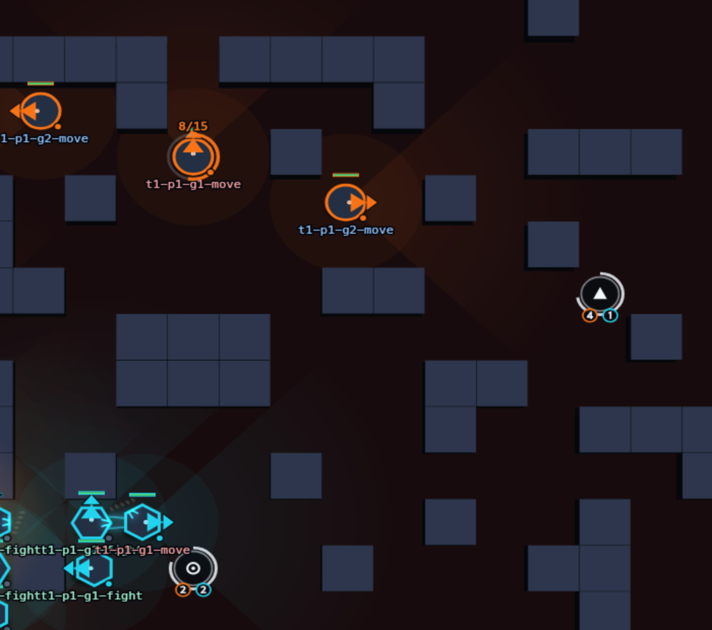
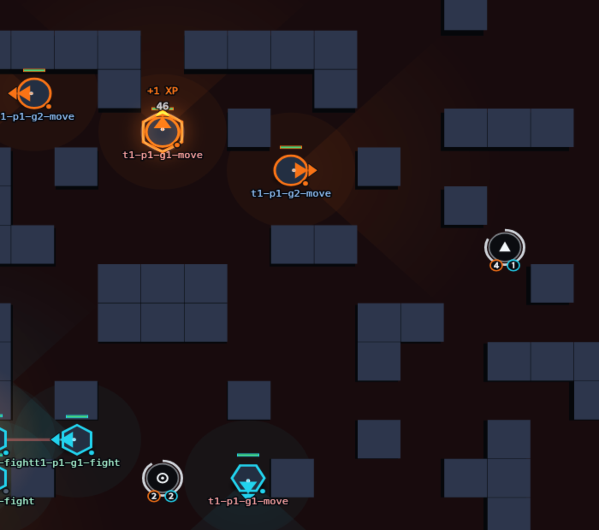
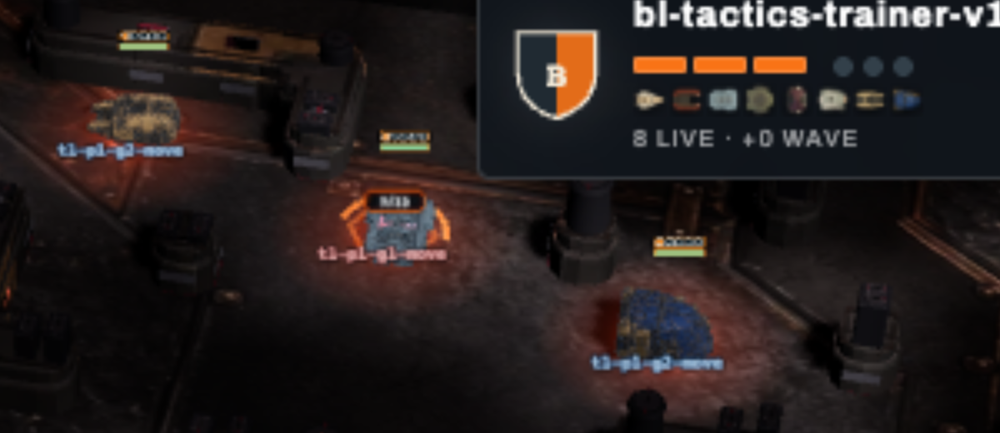
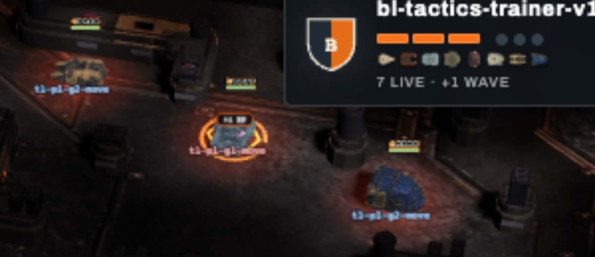

Broadloom promotion — implementation report
broadloom-1 · playlist v33 · neutral veterancy Workshops · 2026-08-22 · branch agent/broadloom-probe
Promoted and verified.
Current ⇒ Broadloom1, hosted playlist v33 minted with a fresh rating book, all acceptance suites green — 2,594 .NET tests + 645 web tests, zero failures — and the Compose app at 127.0.0.1:8080 refreshed from this branch against the established persistent database (28 users, 10 sheets, 95 matches intact; Google sign-in advertised and challenging).
Identities (append-only, minted from source)
| Surface | Identity |
|---|---|
| Profile / ruleset / map | broadloom-1 · arc-relay-broadloom-1 · arc-relay-broadloom-01 v1 (37×27, 681 open tiles) |
| Hosted playlist | v33, fresh rating book; v32 (complete-observation Tapline-14) immutable history with provenance bytes preserved exactly and validated as CreateHistoricalV32 |
| Entrant stock | tempered-broadloom-v1 — authored as a Tactics document, pinned as its materialized Orders + map plan |
| Engine size contract | width/height ≤ 37 under a 1,024-cell budget; 37×27 passes, overflow rejected, every historical map byte-identical |
| SDK | 0.10.16 — additive Workshop contract (context, canonical reader, tagged observation/event codecs); CLI stays 0.9.70 per the v29–v32 promotion precedent (the release checkpoint owns the bump) |
Fingerprints
| rules | c86c3316833280fa4760de0f3c9d5f613b43c3c7d94a4033296fc2cad38ca8ce |
| map | 59127ad0012ae10eb6f154f7d13d3bfff442abb6e97b28fdfd33f13782f1ce16 |
| v33 definition | 5ed88ecdb0a05d024ca47058661e622a1682215388965e6dcc6abc6d1ff1ee4a |
| tactical mirror artifact | 457e0e1e391557c18cbf0616d345c7749c7aaf7f7973c8e41bf0e56513184630 |
| mirror build input | e5a2f950fa81d05c769afd04b627e341bc0a7b0d3bb877867ed231bcf7899ffb |
| stock playbook pin | 9373f4d554aa45fe36d1facb3d4dde8b4ce02c3c3c6eb089fba5404f7f236c33 |
| stock map plan pin | fd3995dab73d8af319aa74fa3a2cb857ec1ea26047667058891177681b6fcd10 |
Workshop chronology (deterministic, documented)
- Evaluation runs inside
ApplyJointTickafter movement, attacks, damage, destructions and after-combat signatures; the session supplies per-tick moved/displaced, combat-acting and damaged actor sets. - The arrival tick never qualifies (arrival is a move). Unlock tick 25 doubles as the first qualifying tick. Completion tick C ⇒ publicly Ready again at C+1+45.
- Channel identity is team+slot+life: death, respawn or rejoining never inherits progress; no cross-team aliasing.
- Proven cadence at seed after seed: sessions 26→40, 86→100, 146→160 … every 60 ticks; 8/8 sessions per protected match; the dormancy boundary exact on every completion.
- Fog narrowing deliberately preserves Workshop state — it is a public neutral-objective signal; nothing else leaks.
Practice proofs — 19 seeded matches on broadloom-1 (mechanics evidence, not balance)
| Scenario | Result |
|---|---|
| Protected training (trainer vs turtle ×3 seeds) | 8/8 sessions per match, exact 15-tick channels, exact dormancy, 4 level events (cap reached) |
| Disruption route (east-seat authored loop) | 2 interruptions per match, reason contested; loop holds 380–460 body-ticks in the contest room |
| Suppression (mirrored seat) | standing contest denies every completion (0 in 600 ticks; 503 contest body-ticks) |
| Workshop feint → outer-Well raid (vs a two-phase guard doc) | 3/3 seeds — the public Training signal fires the guard's workshopTraining{team:enemy} transition, custody rotates 304–384 body-ticks into the contest room, raiders bank 1–2 Cores from the abandoned Well |
| Contest resolves → survivors continue | workshopDone row drives the phase transition at t40 every seed; the trainee provably leaves the tile and takes its centre post |
| Demolition March pressure (both orientations ×3 seeds) | 34 completions under march pressure; demolition-march-v2 — now a Tactics document per instruction — stands as the deathball regression opponent |
Geometry note settled en route: authored posts/patrols mirror 180° with the seat, while Workshop ids are global — contest routes are authored per seat, and the docs record it.
Viewer evidence — both renderers read the same public state




Replay v3, the SDK observation, the wire codec, the site viewers and the Tactics editor all read the identical workshops mode state; each surface carries its own tests. The event feed names the trainee only where the completion fact carries it.
What the deterministic proofs caught (engine truths, found by proving)
- Canonical replay reader rejected Workshop replays. The exact mode-state shape check never learned
workshops, so full verification of any Workshop replay failed. Fixed as the gated optional it is; splice coverage now round-trips every lifecycle fact kind. - Signature-rail declarations aborted replay writing. The replay contract marked the strike lock optional only for windup attacks; the smart Rail's heading-only full-lane declaration (the pinned v32 scene behavior) failed on signature strikes. The documented rule — “UnitTarget is a lock, not a required aiming argument” — now applies to signature strikes too. The mind keeps unlocked declarations, and the mirror bytes stayed identical to the pinned receipt.
- The stage command dropped Workshop rules in its mode copy — the new binding-coverage validator caught it immediately.
Product sheets and editor
- Starters:
first-stand-v2(now sends one body to train at the north Workshop),mid-pincer-v2(two-phase pincer). Stock practice opponents:demolition-march-v2(Tactics),idle-field-v2. All Broadloom-native; v1 files remain tracked history. - Editor: “Train at Workshop” job (workshop selector North/South/Either, one-bot rule, wait posture, constraint copy), six new condition rows with plain-language labels, summary readback (“Gantry trains at the north Workshop”), practice readback that says why progress stopped (contested / took damage / moved / carrying / recharging), recipes and named places re-anchored on the real Broadloom landmarks. 645 web tests green, production build clean.
Acceptance totals
| Suite | Passed | Note |
|---|---|---|
| Engine | 1587 | includes 12 Workshop rules tests + 2 replay round-trip proofs; historical goldens byte-exact |
| App | 314 | PostgreSQL half included; a real broadloom-1 match executes through the hosted queue; 3 release-gated skips |
| Cli | 378 | materializer, movement scenes (pinned to their authored geometry), signature stages |
| Tactical mind | 103 | |
| Sdk | 90 | Workshop wire round-trips incl. the empty historical default |
| Runtime.Wasm | 69 | |
| Guest / Determinism | 36 / 17 | guest artifact rebuilt for SDK 0.10.16 |
| Web | 645 | viewers + editor; golden frames unchanged; production build clean |
| Analyzer skill / candidate | 15 / all | self-test OK; verify.py re-run on the branch passes |
Compose refresh (established persistent database)
nilbots-app-1rebuilt from this branch and healthy;nilbots-db-1untouched at 47 hours; volumenilbots_pgdatareused — no fresh database.- Users 28, sheets 10, matches 95 — identical before and after.
- Google sign-in:
/api/accounts/providers → {"google":true}, challenge route 302s into OAuth; sheet APIs auth-gated (401 anonymous). - Seeded v33 =
arc-relay-broadloom-1with the definition fingerprint above; v32 and older rows untouched. - One collision found and repaired: a parallel session had seeded its unpublished Tapline-15 experiment as v33 into this shared database (zero matches). The codified unpublished-row repair (the Tapline-9 precedent) now covers that exact fingerprint; my v31/v32 definitions reproduce the database’s immutable fingerprints byte-for-byte, proving only the conflicted row moved. The Tapline map line is superseded by Broadloom; that arm’s surviving rules ideas would be re-authored against Broadloom under a new identity.
Remaining hypotheses (deliberately unsettled — balance, not mechanics)
- Raid economics still hinge on authored escort/custody (the settlement battery’s finding stands).
- Workshop side-theatre value shows up as level events and displaced custody, not raw bank swings; whether one veterancy point per hold is the right price is a tuning question.
- Turtle remains non-viable. Demolition March records here are regression evidence only.
Deferred to the release checkpoint (owner call)
publish-cli+ CLI version bump, WASM cross-runtime parity verifier, production deployment of playlist v33.
Companion pages: map atlas · settlement probe. Final commit SHA in the chat report.